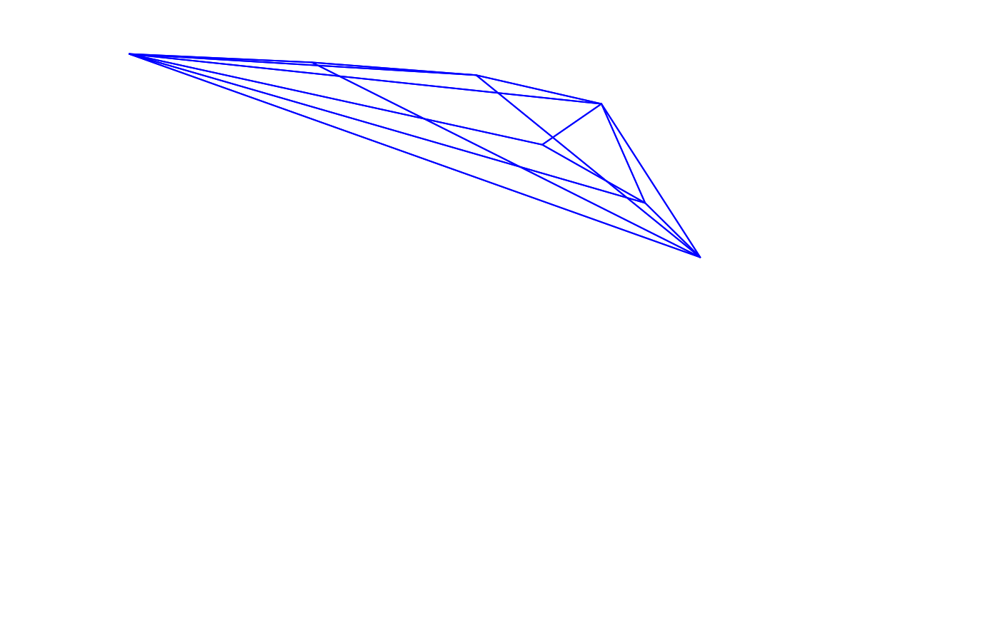

Calculates the overlap between the volumes defined by two sets of points in cartesian space.
voloverlap( colsp1, colsp2, type = c("convex", "alpha"), avalue = "auto", plot = FALSE, interactive = FALSE, col = c("blue", "red", "darkgrey"), fill = FALSE, new = TRUE, nsamp = 1000, psize = 0.001, lwd = 1, ... )
Arguments
| colsp1, colsp2 | (required) data frame, possibly a result from the |
|---|---|
| type | if "convex", the colour volume is plotted using a convex hull and if "alpha", it is plotted using alphashapes. |
| avalue | if |
| plot | logical. Should the volumes and points be plotted? (defaults to |
| interactive | logical. If |
| col | a vector of length 3 with the colours for (in order) the first volume, the second volume, and the overlap. |
| fill | logical. should the two volumes be filled in the plot? (defaults to |
| new | logical. Should a new plot window be called? If |
| nsamp | if |
| psize | if |
| lwd | if |
| ... | additional arguments passed to the plot. See |
Value
Calculates the overlap between the volumes defined by two set of points in colourspace. The volume from the overlap is then given relative to:
vsmallestthe volume of the overlap divided by the smallest of that defined by the the two input sets of colour points. Thus, if one of the volumes is entirely contained within the other, this overlap will bevsmallest = 1.vboththe volume of the overlap divided by the combined volume of both input sets of colour points. Iftype = "alpha", If used, the output will be different:s_in1, s_in2the number of sampled points that fall within each of the volumes individually.s_inboththe number of sampled points that fall within both volumes.s_ineitherthe number of points that fall within either of the volumes.psmallestthe proportion of points that fall within both volumes divided by the number of points that fall within the smallest volume.pboththe proportion of points that fall within both volumes divided by the total number of points that fall within both volumes.
Note
Stoddard & Stevens (2011) originally obtained the volume overlap through Monte Carlo simulations of points within the range of the volumes, and obtaining the frequency of simulated values that fall inside the volumes defined by both sets of colour points.
Stoddard & Stevens (2011) also return the value of the overlap relative to one of the volumes (in that case, the host species). However, for other applications this value may not be what one expects to obtain if (1) the two volumes differ considerably in size, or (2) one of the volumes is entirely contained within the other. For this reason, we also report the volume relative to the union of the two input volumes, which may be more adequate in most cases.
References
Stoddard, M. C., & Prum, R. O. (2008). Evolution of avian plumage color in a tetrahedral color space: A phylogenetic analysis of new world buntings. The American Naturalist, 171(6), 755-776.
Stoddard, M. C., & Stevens, M. (2011). Avian vision and the evolution of egg color mimicry in the common cuckoo. Evolution, 65(7), 2004-2013.
Maia, R., White, T. E., (2018) Comparing colors using visual models. Behavioral Ecology, ary017 doi: 10.1093/beheco/ary017
Gruson H. 2020. Estimation of colour volumes as concave hypervolumes using α‐shapes. Methods in Ecology and Evolution, early view doi: 10.1111/2041-210X.13398
Author
Rafael Maia rm72@zips.uakron.edu
Hugo Gruson hugo.gruson+R@normalesup.org
Examples
data(sicalis) tcs.sicalis.C <- subset(colspace(vismodel(sicalis)), "C") tcs.sicalis.T <- subset(colspace(vismodel(sicalis)), "T") tcs.sicalis.B <- subset(colspace(vismodel(sicalis)), "B") # Convex hull volume voloverlap(tcs.sicalis.T, tcs.sicalis.B, type = "convex")#> vol1 vol2 overlapvol vsmallest vboth #> 1 5.183721e-06 6.281511e-06 6.904074e-07 0.1331876 0.06407598voloverlap(tcs.sicalis.T, tcs.sicalis.C, type = "convex", plot = TRUE)#> vol1 vol2 overlapvol vsmallest vboth #> 1 5.183721e-06 4.739152e-06 0 0 0#> vol1 vol2 overlapvol vsmallest vboth #> 1 5.183721e-06 4.739152e-06 0 0 0# Alpha-shape volume voloverlap(tcs.sicalis.T, tcs.sicalis.B, type = "alpha", avalue = 1)#> vol1 vol2 s_in1 s_in2 s_inboth s_ineither psmallest pboth #> 1 5.183721e-06 6.231493e-06 9 8 2 15 0.2222222 0.1333333